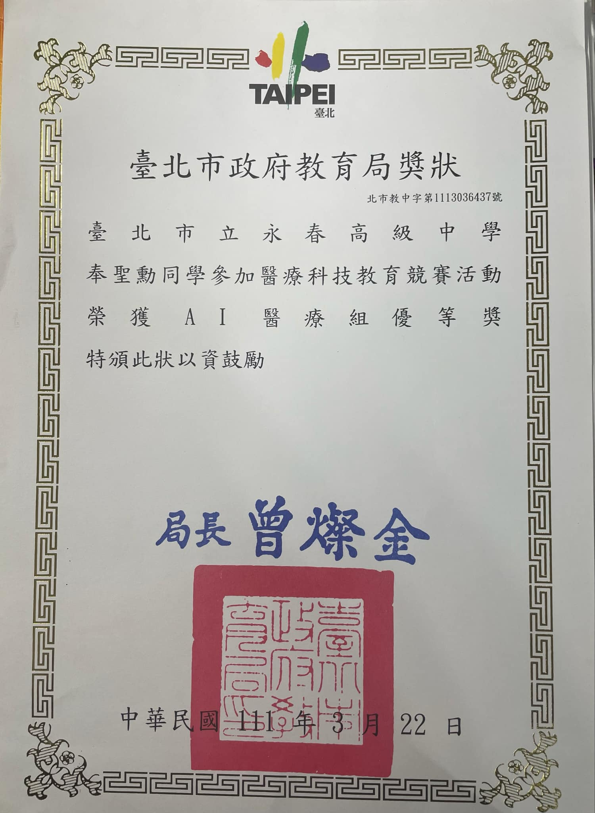
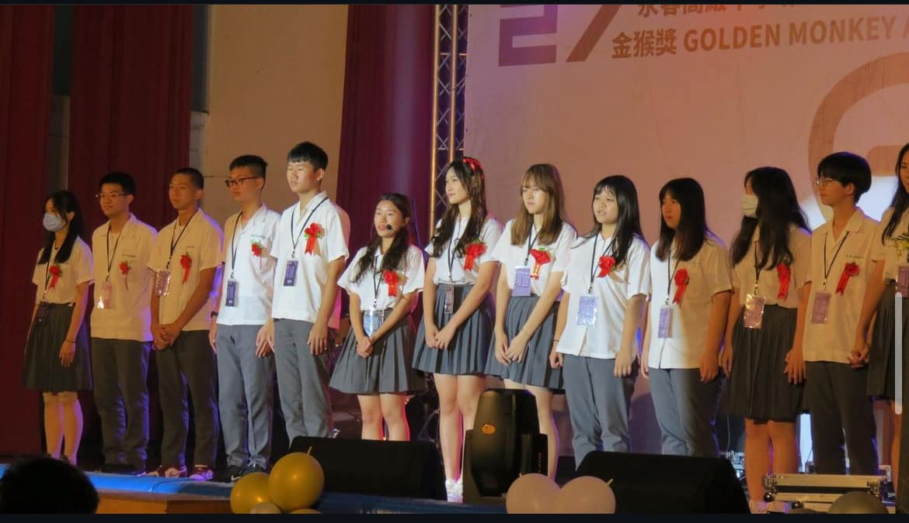
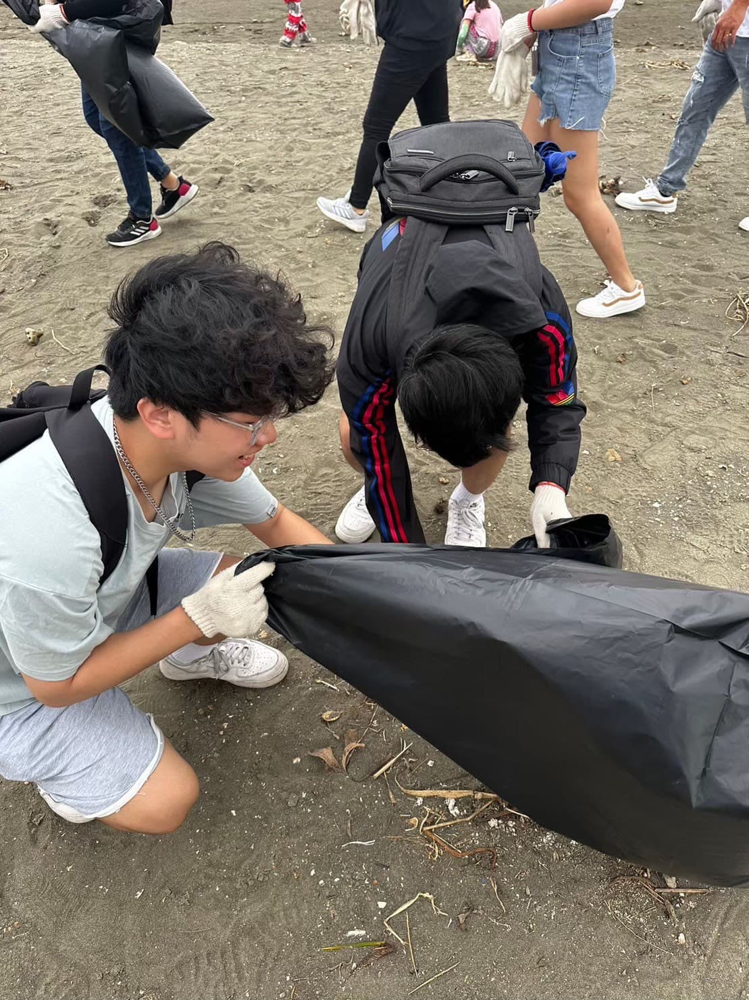
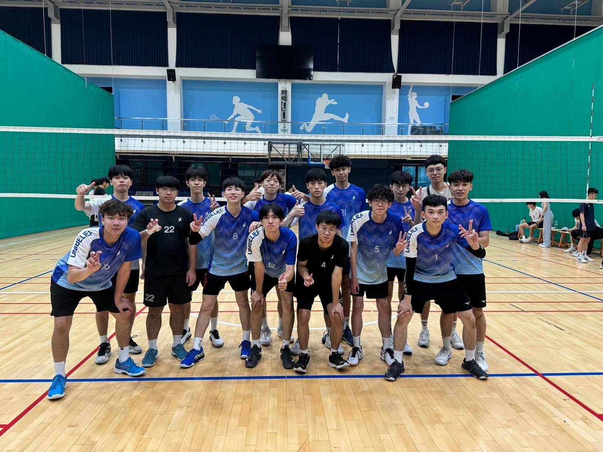
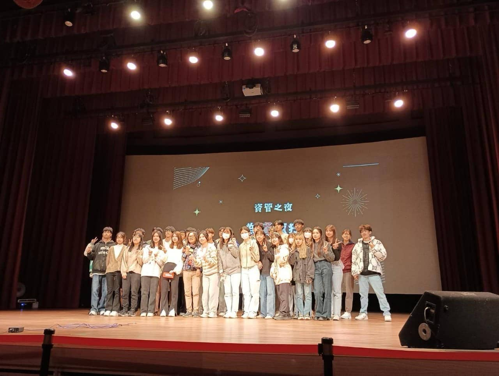

自我介紹
生日：2005/04/24
個性：隨和、認真
興趣：看影片、閱讀、運動
工作經驗:火鍋店員工、永和豆漿學徒
學習經歷：南湖國小>民生國中>永春高中>中原大學
專業技能
活動經驗

醫療競賽
高中時期與同學一起去報名醫療的競賽，內容需要結合科技與醫療來發想並報告
對於醫療的認知不熟悉，過程中不但參加醫療展去學習內容，也上網查資料了解現今的醫療技術，透過不斷的修改跟練習報告，最終也獲得了優等獎
將比賽經驗化作自己成長的養分，涉略不同領域的內容，多多發展對我的未來有所發展

畢業典禮籌辦委員
高中時期參與畢業典禮的籌辦，要與從0開始慢慢規劃在安排大家的畢業典禮，對當時的我是很大的挑戰
在過程中也有遇到很多困難，但在大家合力協調跟籌辦下，最終的典禮圓滿成功
過程學習到整個典禮的籌辦是很辛苦，也需要注意到很多細節，提升自己在於辦事的能力與共同做事的能力

管理學活動
經由管理學的活動，我們去參加了淨灘的行程。
途中不但幫助大自然恢復乾淨整潔，
也透過這樣的活動有所省思，了解到環境保護的重要性並且實踐。
且呼籲大眾環保意識提升。

排球系濟盃
本身對排球有興趣的我，參加了系上的球隊
並且參與系濟盃的比賽，雖然最終沒有得到冠軍
但在過程中認識了許多人，也增加了我的排球技巧
提升我的團隊意識，了解到如何圍繞著團隊行動且配合大家

資管之夜活動
對於上台表演一向感到畏懼的我，選擇在資管之夜中挑戰自己
與班上的同學一同討論表演內容，我也跳脫舒適圈上台表演
雖然在過程中很辛苦且疲倦，也會緊張結果不如預期
最終的收穫是好的，也藉由這次的經驗與同學更加認識，和學習與人配合跟跳脫自我的舒適圈